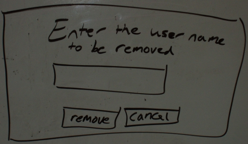

This scenario shows the instructor of a class how to remove users from the classlist.
Removing users is important because it allows the instructor to properly manage the classlist.
In this scenario, we assume that the instructor has just logged into the appropriate class and is looking at the admin page.
Details of logging in as a admin can be found in
Section 2.1
To remove a user, the admin selects User Management and selects Remove User from the drop down menu and the diaglog box shown in Figure x is displayed by the system.

Figure x: Remove User Dialog.
The user field is a one line string where the student's name to be removed is typed in. After the student's name is entered click Remove to remove the student from the classlist.